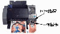
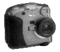

|
|
| 当前位置：电脑报电子版 > 1999 年 > 50 期 > OA专刊 > 外设当自强——几款新型外设产品一览 |
| 《 外设当自强——几款新型外设产品一览 》 |
EPSON IP－100数码照片打印机 在许多人的印象中，打印机和电脑相连似乎是天经地义的事，数码相机中的图片传输到电脑中，经电脑处理后再由与电脑相连的照片打印机输出，这一传统的图像输出模式也使许多人望数码相机而兴叹。把电脑从这一环节中除去成了许多人的愿望，于是，EPSON顺势推出了IP－100智能数码照片打印机，下面就让我们来瞧瞧。与众不同之处：EPSON IP－100最大的特点就是不再与电脑连接使用，数码相机中的图片不用先传输到电脑中，只须把数码相机的智能卡(SmartMedia)或闪存卡(CompactFlash)直接插入到IP－100上的PC卡插槽，就可以将其中的图像数据打印出来。 EPSON IP－100的机身设计得比较特别，它一改以往的乳白色设计，采用了灰黑色外壳，给人一种很酷的感觉，在IP－100的机身右侧，有一块大屏幕的液晶屏，操作面板上有许多按钮，比一般的打印机多得多，这些功能键是为控制直接打印而设计的，它们会让你感觉到这与在电脑上进行照片打印没有任何区别。在打印机正面，除了有一个出纸口外，还有一个PC卡插槽（如图1）。由于数码相机可采用闪存卡或智能卡甚至Memory Stick(记忆棒)来存储图像，因此要把这些卡中的数据通过IP－100打印出来，就必须使用相应的转接卡，再通过控制面板上的功能按钮，即可实现照片打印。 也许你要问，EPSON IP－100如何对存储卡中的图像进行处理？可以进行哪些处理？EPSON IP－100之所以能够对存储卡中的图像进行处理，完全归功于其独特的全自动AI照片处理器。它代替了电脑，在打印机内对数码照片原图像进行全面调整，从对比度调整、亮度调整、色彩平衡补偿、记忆色再现，到色度调整、轮廓补偿、提高清晰度、降低噪音……每一个环节，它都能完美表现。除此之外，IP－100还有33种滤镜功能，这些功能代替了原来在电脑上进行的复杂图像处理,你只需要按几下面板上的控制按钮，即可立即看到经过滤镜处理后的打印效果。这些滤镜的编号及功能可以通过打印机附加说明书查到，而且在打印机的出纸口也有标注。 EPSON的另一个特点就是可以再现的图像像素相当高，一般306×306dpi的热升华打印机，无法充分利用150万像素以上数码相机的丰富数据，并只能打印明信片尺寸的图像。而同样明信片尺寸，EPSON IP－100可以再现到250万像素,A4尺寸更可再现到500万像素，即使是未来的高分辨率的数码相机,EPSON IP－100亦可从容胜任。 具体打印过程：由于采用了独特的全自动AI照片处理器，因此EPSON IP－100 使用操作非常方便。只需插入数码相机存储卡，根据需要在控制面板上直接设定各种打印选项，如打印纸类型、照片格式、打印品质等等，还可以选择你喜欢的滤镜效果，然后按下打印开关，EPSON IP－100就会自动处理图像，很快打印出精美的图片。打印一张高质量的明信片（93mm×131mm），95秒就可完成。同时，特有的语音提示功能会自动提示正确的操作步骤。用EPSON IP－100打印数码相片的流程与用传统方式打印数码照片的流程有很大的区别，具体见图2。当然，也许有人要问，如果我只打印存储卡中的某几张照片，而现在我又不知道它的编号，该怎么办？其实EPSON早就考虑到这个问题。如果你不清楚存储卡中有哪些照片，哪些是你需要的，哪些又不是，那么你可以选择“索引打印”，这样就可以在一张A4纸上打印出80幅索引照片，每幅都有明确的编号。根据编号，你就可以知道哪些照片是自己需要打印的了。你还可以设置照片的打印幅面，如果要在A4纸上打印全幅照片，可选择“4L”模式，如在一张A4纸上要打印两张照片，可选择“2L”模式，如果要在一张纸上打印8张图片，则可以选择“CARD”模式。 Microtek ImageDeck扫描仪 自从EPSON推出了独立使用的数码照片打印机IP－100后，电脑外设好像都要脱离电脑独立地使用，就在打印机“独立”后不久，扫描仪也开始闹起了“革命”，最新推出的ImageDeck扫描仪终于为扫描仪产品带来了“独立”的一天，ImageDeck是Microtek最近推出的面向OA办公领域的创新型“办公信息产品”，它的特点主要是迅速快捷地将扫描结果直接输送至打印机，获得完整逼真的打印图像，并可将图像存盘归档。在以往工作时，这些都要通过电脑来处理，ImageDeck改变了传统设计，从而简化了工作步骤。只要一根连线连接打印机，根据需要按动按钮，就可以在瞬间“拷贝”成功，要多少有多少。独立的存储环境：ImageDeck扫描仪在机身的两边分别内置了高容量100MB的Zip驱动器和标准1.44MB的软驱（如图3），当完成了图像扫描后，就可以利用扫描仪上的“存储”功能，将图像存储到Zip磁盘或者软盘上，整个扫描过程可以完全独立于电脑，而机身的控制面板上的功能键则取代了电脑实现对扫描仪的控制。由于ImageDeck是一个独立操作的扫描设备，文本和图片是以数字格式被存储在一张空白的100MB的Zip盘或软盘上，这样它与PC和Macintosh均兼容。 设置操作简单：利用ImageDeck机身上的控制键（如图3），能够实现一般扫描仪所有的功能，其中包括高、中、低三种分辨率及压缩比例的设置，设置扫描范围为A4或Letter（8.5英寸×11英寸），还能够选择设置将当前扫描的图像存储到磁盘或打印出来。在扫描前也可以根据特殊的需要而预先设置分辨率以及扫描模式（彩色或黑白扫描），最后按机身上的开始按钮即可，操作很简单，和一般的商用复印机差不多。此外，ImageDeck扫描仪还有最先进的自动追踪扫描文件功能，由最大的A4图像到极细小的字都能自动追踪扫描，因此省去了不少手工操作，即使不懂使用电脑进行扫描的人，也能简单操作ImageDeck扫描仪。 另类的彩色复印：由于ImageDeck本身提供了打印并口和公用端口，因此可以连接送纸器和打印机，以满足用户扫描大量文件的需要。当接上打印机后，按下“COPY”便可驱动打印机，将扫描文件打印出来。这样不但能够使打印出来的图像效果比彩色复印机复印出来的效果更好，也为用户减低了使用彩色复印机的成本。同时用户可以自行更新打印机的驱动程序和设定打印机本身的功能，这样不但降低了成本，而且也提高了打印的灵活性。 ImageDeck虽然效果不错，但笔者觉得它是为商业应用开发的，它所针对的不仅仅是扫描仪市场，更是以取代昂贵的彩色复印机市场为目的，因为机器的价格（6000元左右）是一般电脑用户无法承受的，但在商业应用上，它可以说是一台不错的彩色复印帮手。 柯达DC290数码相机  其实只要有较大容量的存储卡，用数码相机拍摄照片根本不必用电脑，只是输出照片时要使用电脑处理，然后由打印机输出，如今好了，有了独立于电脑的打印机后，数码相机也可以与电脑分手了。其实数码相机的独立是依靠打印机得来的，其本身在技术上并没有什么质的飞跃。相对于DC280，柯达DC290（如图4）本身也没有什么质的飞跃，只是由于其330万的像素使人刮目相看而已，当然，它采用的一些新技术也引人注目。柯达DC290相机有四种输出精度，一种是1792×1200（高分辨率），这对于10英寸照片的输出精度而言已经足够了，还有高精度输出2240×1500（超高分辨率），用来印制更大的照片而且决不会丢失细节，另外的1440×960（中分辨率）和720×480（标准分辨率）输出，用来拍摄网站上使用的图片已绰绰有余。DC290还具有三种照片拍摄方式设定，一种是静态拍摄；第二种是连续快拍，当选择中、高分辨率模式时，最快可连续拍摄5张照片，选用标准分辨率时则最快可达20张，速度可从每秒0.1张至每秒3张自行选择，连拍功能主要是针对以最快的速度拍摄最多的张数为目的而设计的；第三种是间隔定时，利用此功能可控制拍摄的张数及拍摄动作之间的间隔时间，此功能也适用于监视和安全性控制管理方面。 柯达DC290最大的特点是首创了“Script”功能，DC290内置了“操作系统” Digital－Scripting，通过Digital－Scripting的执行，DC290可以将许多原本复杂的操作简单化，并且可以将重复性的操作自动化。由于采用Digital－Scripting“操作系统”，因此你可以随意编写或从INTERNET上下载不同的Digital－Scripting软件，使你的DC290不断升级，得到更多的新功能。使用基于Digital－Scripting的应用程序，你可以用DC290来播放幻灯片，从相机直接连接MODEM，使用P.O.T.S(Plain Old Telephone System)电话线来传送图片，这一点使DC290倍受新闻工作者的青睐。 编后：随着21世纪的来临，越来越多的外设都将与电脑独立，而本来独立于电脑的外设如复印机等又要与电脑连接，可以预见，未来的外设将同时具备便携性和兼容性，既可以独立使用又可以与电脑连接使用，多功能的外设会是21世纪的发展趋势。 (苇子) |
| 下载本期推荐软件 | 页 首 |
| CPCW网站版权所有，电脑报网站编辑部设计制作发布 |